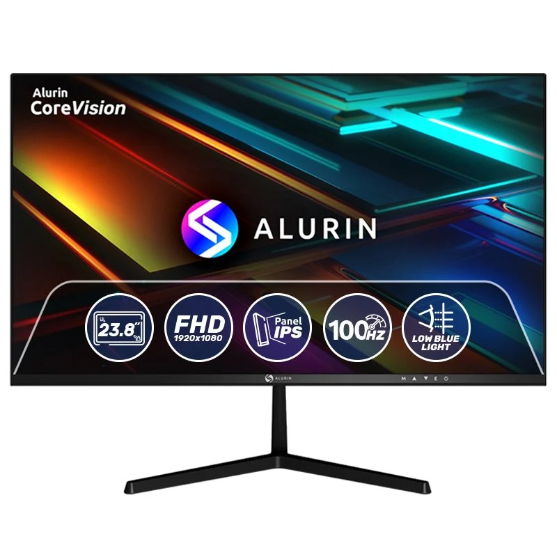

Monitor Alurin 27" IPS FHD 100Hz Freesync USB Tipo C


Especificaciones
- Pantalla de 27 pulgadas: Disfruta de un amplio espacio de visualización con detalles nítidos y colores vibrantes.
- Resolución Full HD y Panel IPS: Sumérgete en imágenes de alta definición con una claridad impresionante que hace que cada detalle cobre vida. La resolución Full HD (1920x1080) garantiza que el contenido visual sea preciso y detallado.
- Frecuencia de actualización de 100Hz y FreeSync: Experimenta una fluidez excelente en tus contenidos visuales, reduciendo el desenfoque de movimiento y proporcionando una ventaja competitiva en juegos y vídeos.
- Conectividad USB Tipo C de 65W: Simplifica tu espacio de trabajo con el puerto USB Tipo C que permite transferencias de datos rápidas y carga de dispositivos hasta 65W.
- Low Blue Light control: Protege tu vista con la tecnología de control de baja luz azul, que evita posibles daños en en tu visión tras largas sesiones de uso.
- Compatibilidad VESA 100x100: Instala tu monitor fácilmente en soportes y brazos de montaje con la compatibilidad VESA 100x100, permitiéndote ajustar la posición de tu pantalla para una ergonomía y comodidad óptimas.